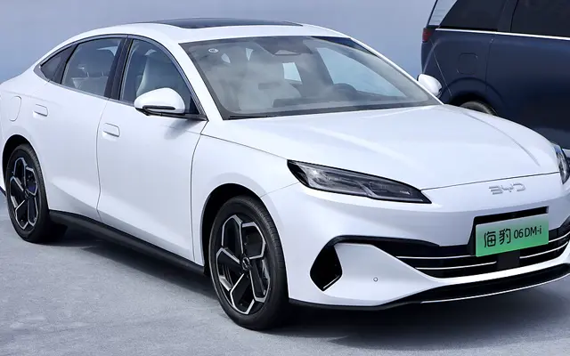

Par Motor › Precios por modelo › BYD Seal 6 y Han
Precio de segunda mano · noviembre de 2026¿Cuánto vale un BYD Seal 6 y Han de segunda mano?

Precio justo estimado de un BYD Seal 6 y Han usado en España, año por año, con los kilómetros normales para su edad y en buen estado: de 24.600 € a 62.000 €. Para tasar el tuyo con sus kilómetros reales y su estado, usa el tasador gratis.
Precios del BYD Seal 6 y Han por año
Seal 6 DM-i (2025–hoy)
Precio de nuevo: 1.5 (enchufable) 184 CV, 33.000 €
| Año | Km normales | 1.5 (enchufable) 184 CV · Híbrido enchufable |
|---|---|---|
| 2026 | 5.000 km | 30.100 € |
| 2025 | 20.000 km | 24.600 € |
Han (2022–hoy)
Precio de nuevo: AWD 517 CV, 72.000 €
| Año | Km normales | AWD 517 CV · Eléctrico |
|---|---|---|
| 2026 | 5.000 km | 62.000 € |
| 2025 | 20.000 km | 50.700 € |
| 2024 | 35.000 km | 46.200 € |
| 2023 | 50.000 km | 42.100 € |
| 2022 | 65.000 km | 38.300 € |
Kilómetros normales: 15.000 al año en gasolina, híbridos y eléctricos, y 20.000 en diésel, con un máximo de 100.000 km (por encima no tasamos: el precio depende demasiado del historial de cada coche). Cifras redondeadas a 100 €.
Preguntas frecuentes
¿Cuánto vale un BYD Seal 6 y Han de segunda mano?
Según el año, la versión y los kilómetros, un BYD Seal 6 y Han usado vale hoy de 24.600 € a 62.000 € en España. El más barato de nuestra tabla es un 1.5 (enchufable) de 2025 (24.600 €) y el más caro un AWD de 2026 (62.000 €). Son precios justos estimados entre particulares y profesionales, con los kilómetros normales para su edad y en buen estado.
¿Cuánto valor pierde un BYD Seal 6 y Han al año?
Con unos años encima, un BYD Seal 6 y Han pierde alrededor de un 9 % de su valor cada año (calculado sobre el AWD de la generación Han). Los primeros años la caída es mayor y a partir de los 70.000 km se acelera.
¿Qué motorizaciones tiene el BYD Seal 6 y Han?
En nuestra base de datos hay versiones híbrido enchufable y eléctrico, en 2 generaciones: Seal 6 DM-i y Han.
¿Cómo sé si me piden demasiado por un BYD Seal 6 y Han?
Abre el tasador de Par Motor, elige el BYD Seal 6 y Han, el año y los kilómetros reales, y escribe lo que te piden. Te diremos si está por debajo del precio justo (chollo) o por encima (caro). Es gratis y no pide registro ni matrícula.
Otros BYD
Compara su coste real
El precio de compra es solo una parte. Mira cuánto te costaría al mes con combustible, seguro, neumáticos, mantenimiento y lo que pierde de valor.
Abrir el comparador →